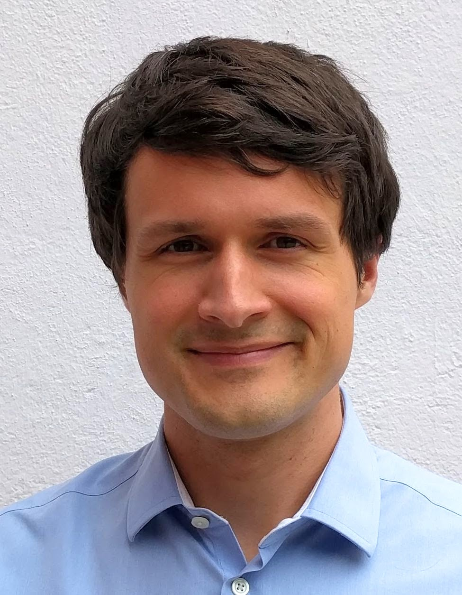

Leopold Talirz
Computational Materials Scientist
I am a computational physicist looking for opportunities to change the world through better materials, science and technology. I love programming and working on materials challenges together with experimentalists & engineers.
Originally from Berlin, I studied physics at ETH Zurich before doing my Ph.D. thesis in the nanotech@surfaces laboratory at the Swiss Federal Laboratories for Materials Science and Technology (Empa). In 2010, this group developed an chemical route to directly synthesize graphene nanostructures (in particular, graphene nanoribbons) on noble metal surfaces. Together with the experimental team, I worked on characterizing the electronic structure of these graphene nanostructures and on improving our understanding of the details of the synthesis by means of ab-initio atomistic simulations.
In 2015, I joined Rex Godby's group at the University of York on a SNF Early Postdoc.Mobility fellowship, working on adding the GW approximation to their iDEA code that allows to compare approximations of the electronic many-body problem to exact solutions for few electrons in one dimension.
From 2017 to 2021, I worked as a link between the Laboratory for Molecular Simulation and the Theory and Simulation of Materials group at the EPF Lausanne. My various projects included adapting the AiiDA framework and the Materials Cloud for the study of nanoporous materials.
In November 2021 I joined Microsoft's Azure Quantum Team.
